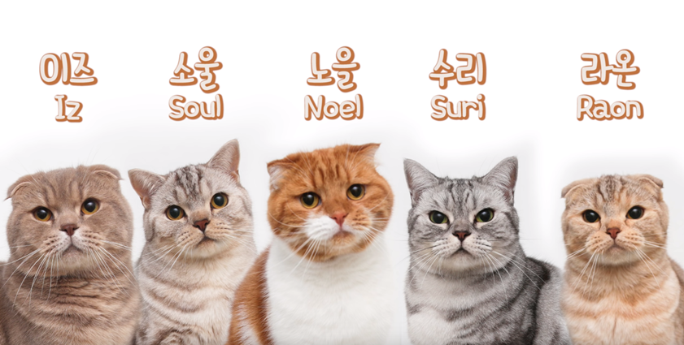

+ 수리노을SURINOEL +
01. 정보
| 이름 | 수리노을 |
|---|---|
| 서비스 시작 | 2010년 11월 21일 |
| 구독자 수 | 130만 명 |
| 공식채널 | 링크 |
| 수리, 노을, 라온, 이즈, 소울. 5마리 고양이 가족의 일상. |
|
02. 집사
02-1. 남집사
"나의 역할은 빗겨주고 먹여주는 것뿐."
2016년 무렵, 아이가 태어나면서 회사를 그만두고 유튜브 크리에이터로 전향했다. 여집사 혼자서 아기집사를 포함하여 다섯고양이까지 케어하기에는 너무 버거운 것이었다. 그렇다고 고양이들을 포기할 수 없었기에 회사를 그만 두고 본인은 고양이들 케어와 유튜브 채널 운영을 하기로 했고 여집사는 아기집사 육아를 하고 있다고 근황을 전했다.
유튜브의 영상들은 모두 그의 손에서 편집되어 나왔다. 크리에이터로 전향하기 전에는 디스트릭트 사 영상감독으로 일했으며, 그 전에는 Mnet에서 FD로 일한 적이 있다고 한다. 영상 편집 실력과 센스가 매우 뛰어나다. 별명은 필냥이.
2016년 무렵, 아이가 태어나면서 회사를 그만두고 유튜브 크리에이터로 전향했다. 여집사 혼자서 아기집사를 포함하여 다섯고양이까지 케어하기에는 너무 버거운 것이었다. 그렇다고 고양이들을 포기할 수 없었기에 회사를 그만 두고 본인은 고양이들 케어와 유튜브 채널 운영을 하기로 했고 여집사는 아기집사 육아를 하고 있다고 근황을 전했다.
유튜브의 영상들은 모두 그의 손에서 편집되어 나왔다. 크리에이터로 전향하기 전에는 디스트릭트 사 영상감독으로 일했으며, 그 전에는 Mnet에서 FD로 일한 적이 있다고 한다. 영상 편집 실력과 센스가 매우 뛰어나다. 별명은 필냥이.
02-2. 여집사
남집사의 아내로, 이름이나 모습을 드러낸 적이 없다. 우연히 모습이 드러나도 윤곽 실루엣으로만 등장하거나 모자이크 처리된다. 주로 암컷 고양이들의 목욕을 담당하며, 고양이 라온이 여집사를 잘 따른다. 기계에 대한 지식이 해박하고 조립하는 데에도 뛰어나 관련 영상이 몇 차례 나왔다.
02-3. 꼬마집사
집사 부부의 아들이다. 처음 등장하였을 때 고양이와 함께 조회수 시너지를 내 500만을 가볍게 돌파했다. 나이에 맞게 고양이들에게 호기심을 가지고 적극적으로 다가가고 있다. 고양이들이 피한다는 게 문제.
03. 고양이

03-1. 노을
| 이름 | 노을 |
|---|---|
| 출생 | 2012년 7월 7일 |
| 품종 | 스코티쉬 폴드 |
| 성별 | 남아 |
| 별명 | 박노을, 노을아재 |
03-2. 수리
| 이름 | 수리 |
|---|---|
| 출생 | 2012년 9월 22일 |
| 품종 | 스코티쉬 스트레이트 |
| 성별 | 여아 |
| 별명 | 박수리, 돼냥이 |
03-3. 라온
| 이름 | 라온 |
|---|---|
| 출생 | 2015년 3월 29일 |
| 품종 | 스코티쉬 폴드 |
| 성별 | 여아 |
| 별명 | 박라온, 라온공주 |
03-4. 이즈
| 이름 | 이즈 |
|---|---|
| 출생 | 2015년 3월 29일 |
| 품종 | 스코티쉬 폴드 |
| 성별 | 남아 |
| 별명 | 박이즈, 곰즈 |
03-5. 소울
| 이름 | 소울 |
|---|---|
| 출생 | 2015년 3월 29일 |
| 품종 | 스코티쉬 스트레이트 |
| 성별 | 남아 |
| 별명 | 박소울, 쏘우리 |